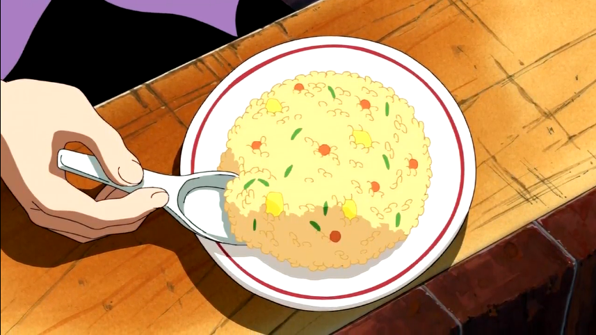

Gin’s fried rice

Description
A fried rice with corned beef dish that can be cooked in a single frying
pan.
Ingredients
- Rice (360g/13oz)
- Corned Beef (50g/2oz)
- of an onion, approximately 50g/2oz
- 4 Brown Mushrooms (Small sized)
- Salad Oil (1 Tablespoon [Metric & Imperial] )*
- Salt (1 Teaspoon [Metric & Imperial] )*
- Salt (1 Teaspoon [Metric & Imperial] )*
- Black pepper to taste
- Japanese Shouyu (½ Tablespoon [Metric & Imperial] )*
- Spring onion (Garnish)
Steps
-
Finely chop the onion, remove the mushroom’s stalk and cut the
mushroom into thin slices. Cut a little of the spring onion into small
pieces. Beat the eggs. **
-
Fry the mushrooms, the corned beef and half of the onions. (Do not add
salad oil)***.
-
Sprinkle the salt and pepper over the rice, and add the remaining
onions. Pour the Shouyu evenly into the pan, mix everything together
well. Serve on a dish and garnish with green onions.